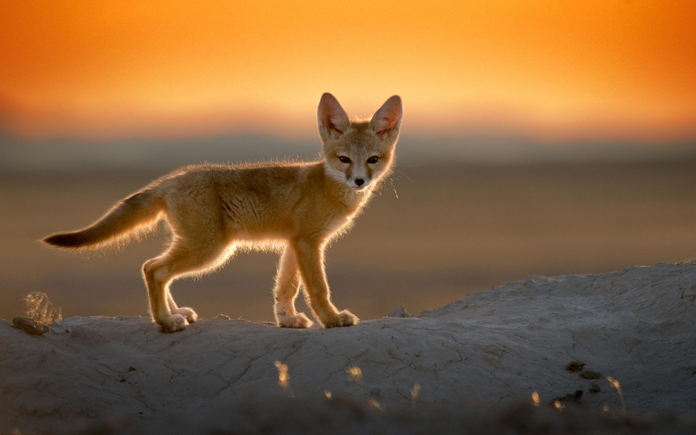

|
jkh
Фенеки
Гуанако
|
Фенеки
Фенеки - пустынные лисицы, а в случае с пустыней Атакама еще и высокогорные.
Обитают они в этой местности на высоте от 3 до 4 тыс. метров над уровнем моря и перемещаются по местности
обычно по одиночке, чтобы было легче найти пропитание. Эти животные являются хищниками и питаются в основном мелкими грызунами и насекомыми.
Шерсть фенеков приспособлена для выживания в суровых условиях пустынь с постоянными перепадами температур,
а также они могут долго обходиться без воды, довольствуясь жидкостью из мяса и растений.

назад
|